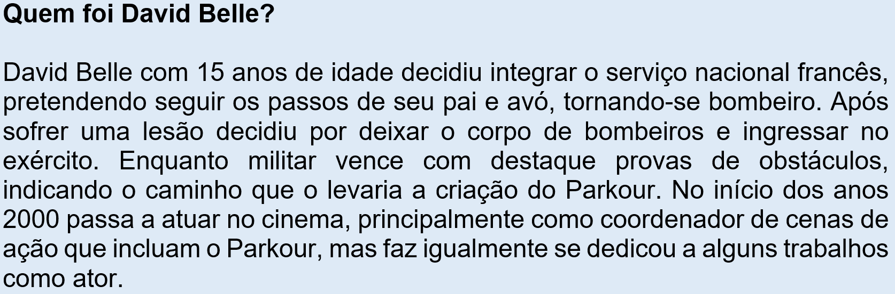

Capítulo 3: Você Sabe Qual é o Calçado Ideal Para Fazer Parkour?
Você Sabe Qual é o Calçado Ideal Para Fazer Parkour?
No contexto da Educação Física as culturas do movimento consideradas alternativas por diversas vezes permeiam diferentes classificações, quase sempre contemplando culturas corporais modernas e contemporâneas. O Parkour é um exemplo disso. Nossa indagação no começo desse capítulo nos leva a explorar o universo de uma modalidade diferente, ainda pouco conhecida do público brasileiro e nos remete a outras questões.
Afinal, o que é parkour?
Neste capítulo vamos abordar esse treinamento esportivo surgido na França, contemporâneo, que tem características muito particulares, inclusive na forma de vestir. O que inclui algumas opções de calçados específicos para a prática, aspecto que nos permitirá tratar também da indústria calçadista.
Veja abaixo um vídeo que introduz essa modalidade:
Parkour ou arte do deslocamento
Consiste em uma atividade física ou ainda, em um treinamento físico, que tem por objetivo tornar o deslocamento mais eficiente em todo tipo de ambiente, transformando obstáculos urbanos e rurais em locais propícios para a pratica da modalidade. Esses obstáculos compostos por troncos, árvores, escadas, bancos, muros, telhados, entre outros, são transpostos através da corrida, saltos, rolamentos, equilíbrio e escalada.
O Parkour surgiu durante a década de 1990, na França. O método fora criado por David Belle e apesar de ter recebido notoriedade através dos filmes de ação ainda continua pouco conhecido do grande público.

Uma aula de Parkour, ou PK como é conhecido entre os praticantes é normalmente composta por um aquecimento (normalmente ginasticas e alongamentos), uma fase de aprimoramento de movimentos específicos da modalidade, como técnicas de escalada, de saltos e rolamentos, por exemplo, e, posteriormente um período de prática livre em obstáculos pré-determinados ou em obstáculos desconhecidos, etapa conhecida como exploração. Ao final da aula busca-se um momento de tranquilidade, através de uma volta a calma, com atividades de relaxamento muscular.
A popularização da modalidade fez com que ambientes menos arriscados, como ginásios fossem adaptados à prática. Nesses espaços se procura adaptar equipamentos utilizados em atividades físicas mais populares implementando-os como obstáculos para os iniciantes de Parkour. Um exemplo disso seria o uso de bancos, mesas, paredes de escalada, cordas, equipamentos de ginastica artística, etc. Porém tem sido comum a implementação de espaços específicos para a prática do Parkour em parques públicos franceses.
Em 1975 o escultor búlgaro Pierre Szekely a pedido da cidade de Evry, na França, constrói um monumento para escalada. Essa mesma obra seria interditada a escalada 20 anos depois por razões de segurança. Porém, mesmo com a proibição “A dama do lago”, nome dado à escultura, acabou se tornando um local de renome internacional para os praticantes do Parkour. Praticantes de várias partes do mundo visitam o local.
As técnicas fundamentais para a prática do Parkour passam pelos rolamentos, muito comum entre os praticantes de judô e aikidô, o treinamento do equilíbrio e conceitos básicos de escalada, além de diferentes técnicas de saltos. O Parkour é considerado uma modalidade alternativa bastante radical, em função da possibilidade de lesões, e, principalmente, devido a uma imagem fortemente veiculada pela mídia em filmes de ação. Entretanto, os adeptos dessa atividade física defendem que cada praticante pode adaptar o treinamento a suas necessidades e interesses, o que faria do Parkour mais acessível ao público em geral.
Existe uma séria preocupação dos praticantes de Parkour para que a modalidade não se torne alvo de competições esportivas. O receio maior é de que se tornando um esporte o Parkour passe a ser levado ao extremo, pois os praticantes tenderiam a buscar movimentos cada vez mais complexos e perigosos o que exporia a modalidade a um risco desnecessário.
Vestuário e estilo próprio, o calçado ideal
De um modo geral as modalidades que se tornam atrativas ao grande público passam a induzir seus praticantes a se valer de produtos específicos que nos vinculem a essa cultura específica, no caso da educação física o vestuário e calçados são muito atrativos do ponto de vista financeiro. O Parkour tem igualmente suas características, o vestuário mais comum são abrigos esportivos, já existem marcas que buscam essa vinculação com a modalidade criada na França. O mesmo acontece com o calçado, não é difícil encontrarmos entre os praticantes a indicação de tênis específicos para a prática do Parkour, ou fabricantes que vinculem seu produto a garotos propaganda da modalidade indicando que seu calçado atende uma finalidade específica.
Entretanto, indicar um calçado específico para a prática do Parkour é uma questão complexa, pois muitos dos especialistas no assunto indicam que não se pode apontar um calçado para a modalidade. Cada praticante deve buscar um calçado em que se sinta confortável, pois as necessidades das pessoas são distintas.
A prática do Parkour exige calçados com um mínimo de resistência, já que esfregar o solado em paredes diuturnamente provoca elevado desgaste. Acontece que muitos adeptos optam por um padrão estético em detrimento do conforto ou da resistência. Existem modelos que atraem pelo baixo custo, porém outros aspectos precisam ser considerados como a leveza do material e ainda o amortecimento, já que os saltos serão constantes.
Vários praticantes, entretanto, sugerem que amortecedores não são uma necessidade, pois, para o praticante comum os saltos de grandes alturas ou distâncias são pouco frequentes e as técnicas de rolamentos e a musculatura das pernas tendem a reduzir impactos. Outro aspecto negativo apontado por praticantes mais experientes é o fato de que com o amortecimento elevado existe uma diminuição da estabilidade da articulação do tornozelo e baixa aderência do solado. Talvez, por isso, a sugestão para que cada um busque o calçado que entenda mais confortável e atenda suas necessidades pessoais.
Apesar da opinião controversa de praticantes e adeptos do Parkour o calçado tem uma papel bastante importante na qualidade da prática de atividades física, desde esportes como o futebol que tem sua relação atrelada as chuteiras, quanto praticas radicais, como a escalada, ou ainda atividades mais corriqueiras, como a corrida para condicionamento físico, o calçado certo pode ser um fator importante para se evitar lesões. Para tanto, o praticante de qualquer atividade física deve considerar seu histórico pessoal, ângulos corporais joelho-quadril, para saber se sua estrutura musculoesquelética não é propensa a lesões nas articulações, sem contar a estrutura da planta do pé, que pode gerar dores crônicas se o calçado não for bem escolhido.
A popularização do parkour
Apesar de ainda pouco conhecido do público em geral o Parkour já tem invadido nosso cotidiano sem que nos apercebamos disso. Filmes de ação tem explorado com muita frequência adeptos dessa modalidade para incrementar as cenas frenéticas de perseguição. Isso abriu o mercado profissional de dublês de cinema aos praticantes experientes e ousados da modalidade.
David Belle, considerado o fundador do Parkour, tornou-se ator por esse motivo. A requisição dos traceurs, nome dado aos praticantes do Parkour, não tem ocorrido apenas em produções cinematográficas francesas, Hollywood tem usado igualmente os praticantes do Parkour como consultores ou dublês em cenas de correria frenética.
O vídeo abaixo fornece uma noção dos movimentos acrobáticos explorados pelos estúdios de cinema e ainda possibilita constatar o uso de ginásios e equipamentos esportivos para treinamento dos praticantes de Parkour.
Acrobacias Freerun
Em países de idioma inglês a modalidade passou a ser chamada de Free-running ou Freerun, incorporando movimentos específicos de artes marciais e ginástica artística, porém, isso despertou alguns debates com relação aos praticantes do Parkour francês, o freerun poderia ser encaixado como uma transformação do Parkour com fins acrobáticos, muito bem-vindo no meio cinematográfico e conquistando adeptos entre amantes de esportes radicais com certo risco.
Os riscos e cuidados para a pratica do parkour
Por se tratar de uma modalidade alternativa, relativamente nova e que agrega movimentos radicais, no caso de praticantes experientes, o Parkour necessita de alguns cuidados que vão além da questão corporal. Um dos grandes problemas da prática dessa modalidade é o fato de que a imensa maioria dos adeptos buscam espaços públicos ou, ainda, privados para executar seus percursos. É necessário que se saiba gerir essa relação, pois o maior problema da prática tem se mostrado ser a relação atribulada entre os jovens praticantes do Parkour e a vizinhança dos locais de prática.
A legislação de cada país é algo a ser levada em consideração, principalmente, quando se trata de invasão de propriedade privada. Algumas vezes, existem deteriorações dos espaços usados para treinos, por exemplo, marcas de calçados nas paredes ou queda de corrimãos. Existem grupos de traceurs na França que atuam para reparar os danos provocados, algo acertado em comum acordo entre as partes envolvidas, para facilitar a relação entre a vizinhança e os praticantes. Em muitas partes do mundo existem interdições para a prática do Parkour, devido ao risco de determinados espaços ou de reclamações dos moradores da vizinhança de determinados espaços. Não existe uma legislação que determine a prática do Parkour, por isso, é necessário diálogo e o emprego do bom senso. Algo muito enfatizado pelos fundadores da modalidade, especificamente estes não desejam que a prática do Parkour fique mal vista em função do mau comportamento de determinados praticantes.
Existem poucos clubes e associações de Parkour, a imensa maioria dos praticantes se reúnem em grupos, praticam ao ar livre e se popularizam através das redes sociais, seja por meio de vídeos no Youtube ou fóruns online. Entretanto, essa falta de sistematização da modalidade, pode trazer problemas relacionados a falta de orientação especializada. Não é recomendável que se busque realizar atividades consideradas com certo grau de risco sem o devido preparo e treinamento.
O mais interessante é buscar o máximo de informações e procurar o acompanhamento de alguém que possa orientar a prática, focando não apenas em diversão, mas na prática saudável. Exercícios de aquecimento cardiopulmonar, articular e alongamentos, assim como educativos para minimizar o impacto de saltos e quedas são não apenas recomendáveis, mas uma necessidade prioritária para aqueles que desejam se aventurar nessa modalidade contemporânea.
O que aprendi
Provavelmente está foi a primeira vez que você ouviu falar do Parkour. Essa atividade física contemporânea vem ganhando espaço entre o público jovem, principalmente através das telas de cinema. Aprendemos que essa modalidade tem fortes vínculos com os treinamentos militares, serviços de resgate e artes marciais, já que seus primeiros praticantes eram oriundos dessas atividades profissionais e de lazer.
Tendo nascido na França o Parkour tem em seu vocabulário diversos termos em idioma francês, por exemplo, “traceurs”, você lembra o que significa esse termo?
Apesar de surgido na França, através do fenômeno da internet e amplo emprego de mídias sociais, popularizou-se, explando-se para diversos países. Em países de idioma inglês, principalmente Inglaterra e Estados Unidos, sofreu algumas alterações, tornando-se mais acrobático e mudando o nome para freerun.
Você saberia dizer como podemos começar a praticar o Parkour? Verifique com seu professor a sua disponibilidade para executar pequenos saltos, estrelinhas e rolamentos. Consegue subir em árvores ou executar flexões de braço e barra fixa? Quem sabe esses desafios possam servir de incentivo para experimentar uma nova modalidade, que ainda não pode ser considerada esportiva, mas que tem grande potencial de popularização entre o público jovem.
Por fim, gostaríamos de convidá-lo a produzir um resumo sobre a importância de um calçado para a prática de atividades físicas, atentando para os riscos e lesões, apontados em leitura complementar.